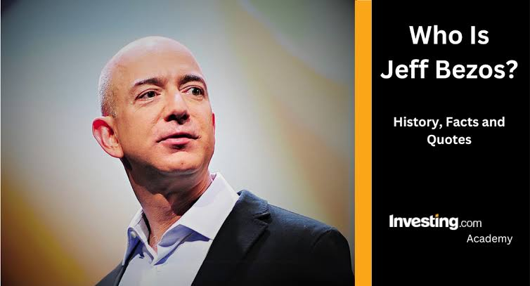

Core Pillars of BusinessAmazon operates a massive, diversified ecosystem that powers much of the modern internet and retail landscape:E-Commerce Marketplace: The world's largest online retailer, serving hundreds of millions of customers globally and partnering with over 1,000 auto dealerships via Amazon Autos.Amazon Web Services (AWS): The global leader in cloud computing, hosting a significant portion of the internet's physical infrastructure and offering over 200 fully featured services.Artificial Intelligence: A frontrunner in generative AI development through enterprise platforms like Amazon Bedrock and custom AI silicon chips.Digital Entertainment & Media: Prominent streaming and entertainment services including Prime Video, Amazon Music, Twitch, and Audible.Consumer Electronics: Creator of smart home and reading hardware lines such as Kindle, Echo (Alexa), Fire TV, and Fire Tablets.

Jeff Bezos is an American entrepreneur, computer scientist, and billionaire who fundamentally transformed global commerce as the founder of Amazon. Widely recognized as a pioneer of the e-commerce revolution, he built a virtual garage bookstore into one of the world's most powerful technology conglomerates. As of August 2026, he is the third-richest person globally, with a net worth fluctuating around $269 billion.
The Mindset: Core Business PhilosophyBezos's corporate playbook at Amazon relied on principles that redefined modern corporate strategy:"Day 1" Philosophy: Treating every business day as if it is the first day of a startup to prevent corporate complacency and stagnation.Customer Obsession: Prioritizing customer satisfaction and long-term loyalty over short-term financial gains or competitive rivalry.Regret Minimization Framework: A personal mental model he used to quit his stable job, designed to make decisions that minimize future regrets when looking back at old age.